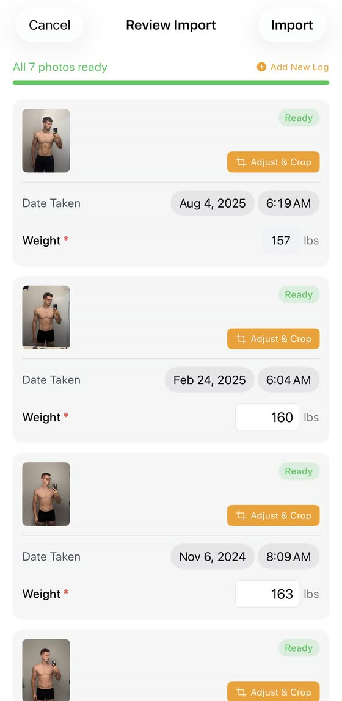
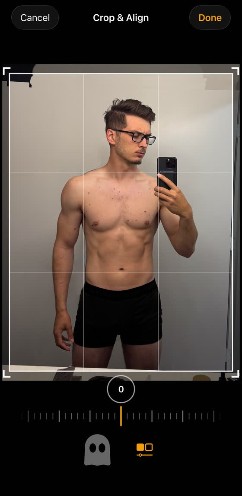
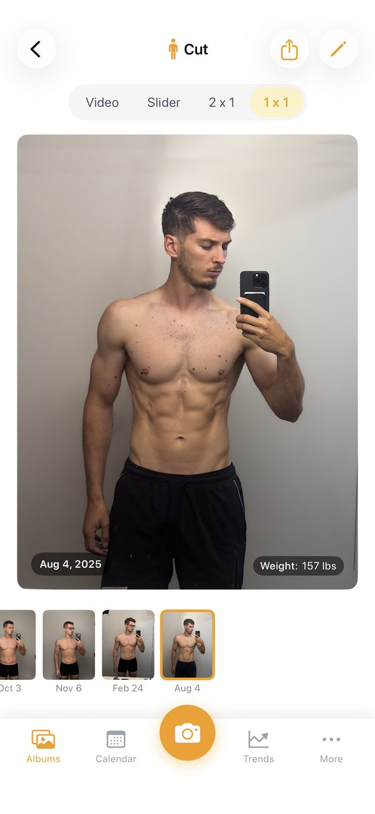
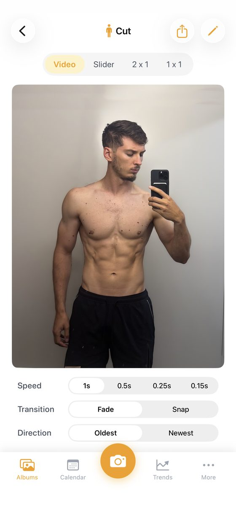
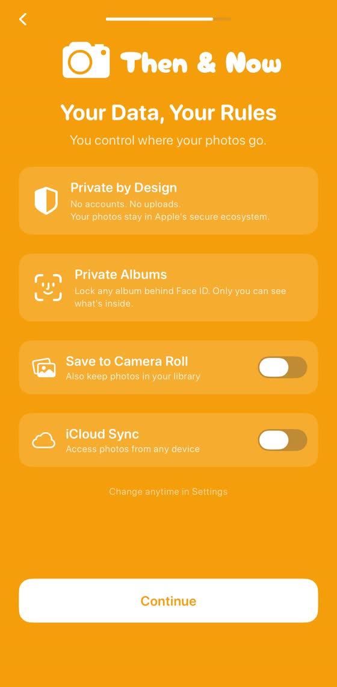
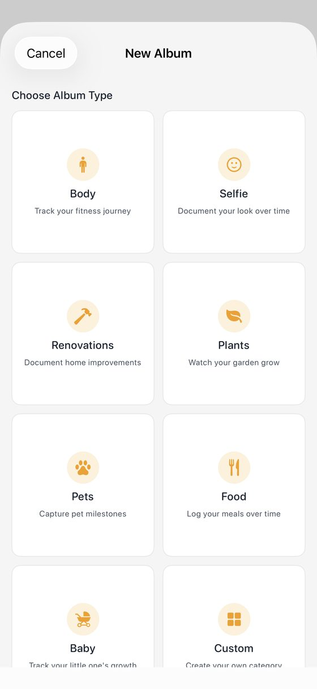

Blog · Best progress photo apps · [DRAFT: noindex, not published; publish date TBD] · Mark Stepchin
Then & Now review: a voice timer, date-reading import, and a buried align tool
Full disclosure: I build Recomp, a free progress photo app that competes with this one. No app pays me [CONFIRM: no ads, affiliate links or partner deals]. This review expands the Then & Now entry in my roundup of the best progress photo apps, scored with the same kit.
[TODO: placement. The roundup picks Then & Now for hands-free capture, but the voice timer behind that pick is Premium, and the entry also calls it one of the better apps for compare. Decide which pick it gets, and whether "Beginner all-in-one" fits.]
What it costs
Then & Now is free, with Premium at $4.99 a month, $29.99 a year or $99.99 lifetime. The annual plan has a one-week free trial. Free users can store a limited number of photos per week, and free exports carry a watermark. Premium unlocks the ghost overlay, the voice timer, every compare mode including the time-lapse, album locking and advanced metrics, per its support FAQ.
Taking a check-in
I proposed 4 out of 5 for capture. It has a voice timer, body silhouettes and a ghost overlay, and the timer and overlay are Premium. Speech recognition runs on the device, per its policy. [CONFIRM: the only voice timer of the 10 apps, after testing] [TODO: seconds and taps to a saved check-in]
Importing old photos
Its import process is very nice. Bulk import reads each photo's date taken, and asks for a weight for every photo. Bulk import arrived in 1.2 on Mar 3, 2026, and a redesigned review flow in 2.0 on Apr 4. Imported photos keep their original EXIF data, including location, per its policy. [TODO: whether same-day photos group into one check-in] [TODO: the roundup says both Recomp and Then & Now read photo dates; the policy only says EXIF is kept. Confirm which sets the entry date.]

Lining photos up
I proposed 2 for alignment. Manual Crop & Align has pan, zoom and rotate, a straighten dial and a ghost toggle. It was redesigned in 2.3 on Jul 4, 2026. It works, but you reach it one photo at a time inside Adjust & Crop, so it's not convenient.

Comparing two dates
I proposed 3 for comparison. It has a video time-lapse, a slider, 2x1 and 1x1, with the date and weight on each photo. Since 2.2, Apple Health values show in Side by Side. It's a standard UI that works but isn't amazing.


Where your photos live
Then & Now's label reads Data Not Collected, the runner-up to Check-In on privacy in my roundup. Its policy says no analytics, advertising identifiers or third-party tracking SDKs, and it needs no account. Data lives on the device. Face ID locks each album.
iCloud sync and Save to Camera Roll are optional and off by default. Sync uses CloudKit across devices on the same iCloud account. The developer's FAQ says deleting the app removes all local data. [TODO: does a CloudKit restore work on a fresh install?]

Not only for fitness
Album types like Renovations, Plants and Pets make it a general-purpose before/after app. It syncs weight and body measurements with Apple Health since 2.0. I found no Android version.

Scores so far
| Score (1 to 5) | Then & Now | Status |
|---|---|---|
| Capture and tracking | 4 | Proposed |
| Alignment | 2 | Proposed |
| Comparison | 3 | Proposed |
| Design | TBD | |
| Performance | TBD | |
| Privacy | TBD | |
| Backup | TBD | |
| Import (bonus, outside the total) | TBD | |
| Total out of 35 | TBD | 9 from the three proposed |
[CONFIRM: rescore on the v8 rubric or the Oct 4 measured tiers; v7 provisional grade was A, 20/25.]
The numbers
Every app's numbers sit side by side, with test dates, in my test data.
| Field | Value |
|---|---|
| Full name | Progress Pics Photo Then & Now |
| Rating | 5.0 from 9 US ratings (Oct 3, 2026) |
| Written reviews, Jul 2 to Oct 2, 2026 | 0 (US feed) |
| Written reviews in Apple's feed | 4 in my study |
| First released | Feb 26, 2026 |
| Last updated | Jul 4, 2026 |
| Version tested | 2.3 [CONFIRM] |
| Requires | iOS 17.0+; no Android found |
| App Store | Progress Pics Photo Then & Now on the App Store |
Who should use something else
With 9 ratings, Then & Now has little track record. If you want auto-align, see my Thumbstone review. If you want a one-time price, see Fit-Stitch.
What I haven't tested yet
I still need design, performance, privacy, backup and import scores, and a CloudKit restore. I also need to confirm how its import sets each entry's date. If you've moved Then & Now to a new phone, email me at support@progressphotos.app.
See the progress buried in your camera roll
Compare progress photos on a before-and-after timeline, scroll to any date instantly, and align photos on the fly. Recomp never uploads your photos. It sends anonymous usage analytics and crash reports, with no account and no tracking.